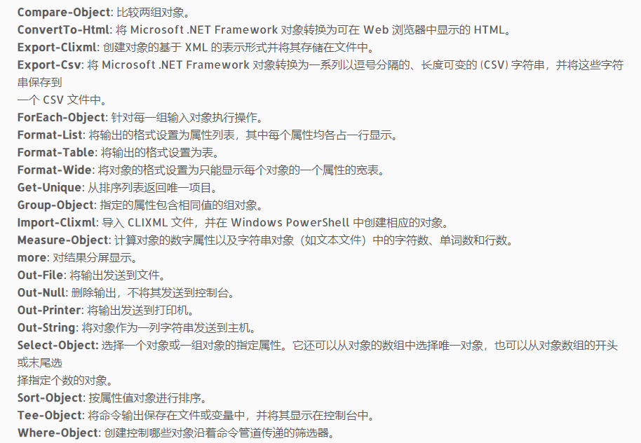

powershell交互式
命令
|
|
powershell解析命令的顺序
- 别名
- 函数
- cmdlets，内置命令
- 外部的ps1文件
- 外部的普通文件
变量
|
|
特殊变量说明
| $$ | 包含会话所收到的最后一行的最后一个令牌 |
|---|---|
| $? | 包含最后一个操作的执行状态 |
| $^ | 包含会话所收到的最后一行的第一个令牌 |
| $_ | 包含管道对象中的当前对象 |
| $Args | 包含由未声明参数或传递给函数，脚本或脚本块的参数值组成的数组 |
| $LastExitCode | 包含运行的最后一个基于windows的程序的退出代码 |
环境变量：
|
|
更改变量的可见性：在运行脚本时使用一个原点和空格，powershell不会给脚本创建自己的变量作用域，它会共享当前控制台的作用域。
变量作用域
| 变量 | 作用域 |
|---|---|
| $global | 全局变量，在所有的作用域中有效 |
| $script | 脚本变量，只会在脚本内部有效，包括脚本中的函数，一旦脚本运行结束，就会被回收 |
| $private | 只在当前作用域有效 |
| $local | 默认变量，在当前作用域有效，其他作用域只对它有只读权限 |
$private限制的变量不能够再$global修改，不但不能够修改，还会删除当前的值
$local修饰的变量可以通过$global在函数内部更改
变量类型
|
|
Attributes[System.Management.Automation.PSVariableAttributeCollection]属性，如果这个Attributes为空，可以给这个变量存放任何 类型的数据，Powershell会自己选择合适的类型。一旦这个Attributes属性确定下来，就不能随意存放数据了
数组
|
|
管道

|
|
使用对象
|
|
MemberType包括
AliasProperty：另外一个属性的别名
CodeProperty：通过静态的.Net方法返回属性的内容
Property：真正的属性
NoteProperty：随后增加的属性
ScriptProperty：通过脚本执行返回一个属性的值
ParameterizedProperty：需要传递参数的属性
循环和判断
|
|
powershell脚本
|
|
Unrestricted:权限最高，可以不受限制执行任何脚本。
Default:为Powershell默认的策略：Restricted，不允许任何脚本执行。
AllSigned：所有脚本都必须经过签名才能在运行。
RemoteSigned：本地脚本无限制，但是对来自网络的脚本必须经过签名。
|
|
在Powershell脚本的处理中，绝大多数情况下遇到的都是集合，一旦上一条命令产生一个中间结果，下一条命令就对这个中间结果及时处理，及时释放资源。这样可以节省内存，也减少了用户的等待时间。在处理大量数据时，尤其值得推荐。高速流模式的管道定义包括三部分：begin,process,end。
|
|
文件查找操作
|
|
|
|